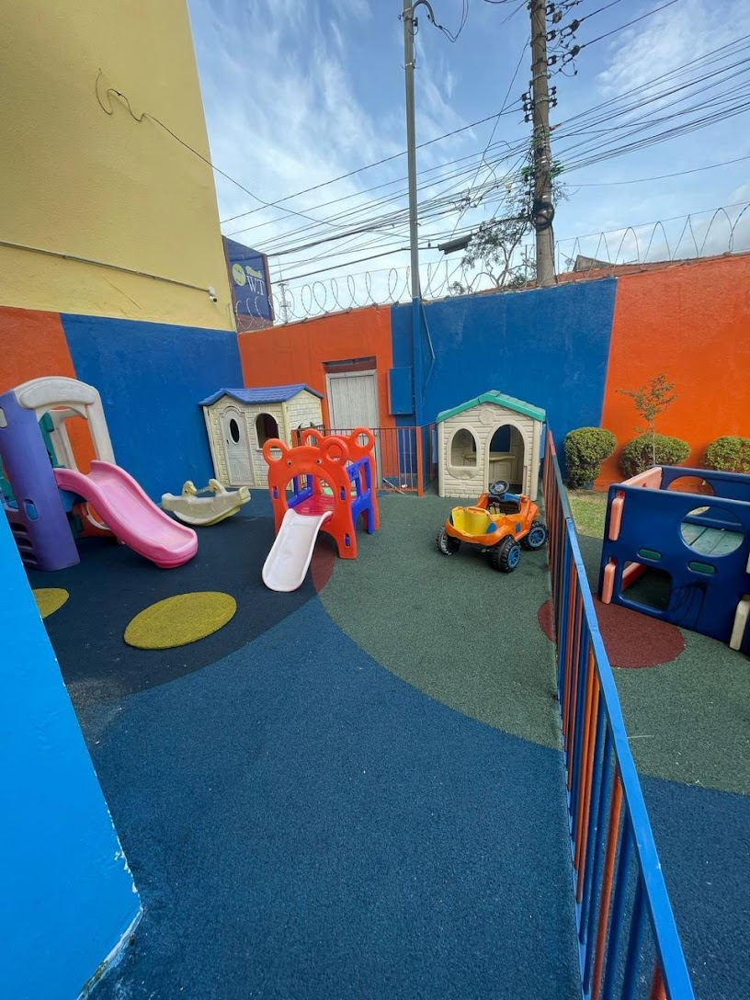
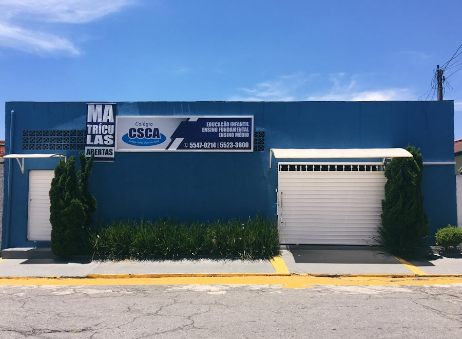

Chegada tranquila
Ambiente preparado para receber a criança com afeto e previsibilidade.
Berçário e educação infantil com acolhimento, segurança e experiências lúdicas para crianças viverem a escola com carinho, autonomia e alegria.
A Silva Ribeiro pode ser apresentada como uma escola viva: cada espaço tem uma função afetiva, pedagógica e sensorial. A pista no pátio se transforma na metáfora perfeita para mostrar a jornada da criança.
O site conduz as famílias por um percurso: chegada segura, acolhimento, brincar, alimentação, descanso, socialização e desenvolvimento.
Ambiente preparado para receber a criança com afeto e previsibilidade.
Experiências lúdicas que estimulam linguagem, movimento, autonomia e convivência.
O pátio com ruas desenhadas incentiva imaginação, regras simples, turnos e faz de conta.
Famílias seguras porque percebem carinho, rotina e vínculo no dia a dia.
As fotos do perfil mostram uma escola com áreas externas, brinquedos, casinhas e a pista pintada no chão, um detalhe forte para diferenciar a comunicação.


A proposta não é só informar. É fazer a família sentir o clima da escola: colorida, cuidadosa, próxima e cheia de movimento.
As avaliações destacam acolhimento, atenção dos profissionais e sensação de segurança. Esse é o coração do discurso: uma escola pequena no tamanho certo para cuidar de perto.
Rotina acolhedora, adaptação sensível e cuidado com os primeiros vínculos fora de casa.
Aprendizagem por experiências, brincadeiras, convivência e descobertas cotidianas.
Comunicação clara para que os responsáveis acompanhem a criança com tranquilidade.
“A escola acolheu meu filho de uma forma tão linda, que me falta elogios aqui para agradecer.”
Avaliação no Google
“Minha bebê ama a escolinha e sentiu-se segura desde o primeiro contato.”
Avaliação no Google
“Amor, carinho, respeito e confiança é o que define a Escola Silva Ribeiro.”
Avaliação no Google
Av. Leblon, 55 - Jardim dos Lagos, São Paulo - SP. Atendimento pelo telefone (11) 5521-4948.